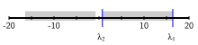

Section 5.2 Finding eigenvectors numerically
We have typically found eigenvalues of a square matrix \(A\) as the roots of the characteristic polynomial \(\det(A-\lambda I) = 0\) and the associated eigenvectors as the null space \(\nul(A-\lambda I)\text{.}\) Unfortunately, this approach is not practical when we are working with large matrices. First, finding the charactertic polynomial of a large matrix requires considerable computation, as does finding the roots of that polynomial. Second, finding the null space of a singular matrix is plagued by numerical problems, as we will see in the preview activity.
For this reason, we will explore a technique called the power method that finds numerical approximations to the eigenvalues and eigenvectors of a square matrix.
Preview Activity 5.2.1.
Let's recall some earlier observations about eigenvalues and eigenvectors.
How are the eigenvalues and associated eigenvectors of \(A\) related to those of \(A^{-1}\text{?}\)
How are the eigenvalues and associated eigenvectors of \(A\) related to those of \(A-3I\text{?}\)
If \(\lambda\) is an eigenvalue of \(A\text{,}\) what can we say about the pivot positions of \(A-\lambda I\text{?}\)
Suppose that \(A = \left[\begin{array}{rr} 0.8 \amp 0.4 \\ 0.2 \amp 0.6 \\ \end{array}\right] \text{.}\) Explain how we know that \(1\) is an eigenvalue of \(A\) and then explain why the following Sage computation is incorrect.
Suppose that \(\xvec_0 = \twovec{1}{0}\text{,}\) and we define a sequence \(\xvec_{k+1} = A\xvec_k\text{;}\) in other words, \(\xvec_{k} = A^k\xvec_0\text{.}\) What happens to \(\xvec_k\) as \(k\) grows increasingly large?
Explain how the eigenvalues of \(A\) are responsible for the behavior noted in the previous question.
Subsection 5.2.1 The power method
Our goal is to find a technique that produces numerical approximations to the eigenvalues and associated eigenvectors of a matrix \(A\text{.}\) We begin by searching for the eigenvalue having the largest absolute value, which is called the dominant eigenvalue. The next two examples demonstrate this technique.
Example 5.2.1.
Let's begin with the positive stochastic matrix \(A=\left[\begin{array}{rr} 0.7 \amp 0.6 \\ 0.3 \amp 0.4 \\ \end{array}\right] \text{.}\) We spent quite a bit of time studying this type of matrix in Section 4.5; in particular, we saw that any Markov chain will converge to the unique steady state vector. Let's rephrase this statement in terms of the eigenvectors of \(A\text{.}\)
This matrix has eigenvalues \(\lambda_1 = 1\) and \(\lambda_2 =0.1\) so the dominant eigenvalue is \(\lambda_1 = 1\text{.}\) The associated eigenvectors are \(\vvec_1 = \twovec{2}{1}\) and \(\vvec_2 = \twovec{-1}{1}\text{.}\) Suppose we begin with the vector
and find
and so forth. Notice that the powers \(0.1^k\) become increasingly small as \(k\) grows so that \(\xvec_k\approx \frac13\vvec_1\) when \(k\) is large. Therefore, the vectors \(\xvec_k\) become increasingly close to a vector in the eigenspace \(E_1\text{,}\) the eigenspace associated to the dominant eigenvalue. If we did not know the eigenvector \(\vvec_1\text{,}\) we could use a Markov chain in this way to find a basis vector for \(E_1\text{,}\) which is essentially how the Google PageRank algorithm works.
Example 5.2.2.
Let's now look at the matrix \(A = \left[\begin{array}{rr} 2 \amp 1 \\ 1 \amp 2 \\ \end{array}\right] \text{,}\) which has eigenvalues \(\lambda_1=3\) and \(\lambda_2 = 1\text{.}\) The dominant eigenvalue is \(\lambda_1=3\text{,}\) and the associated eigenvectors are \(\vvec_1 = \twovec{1}{1}\) and \(\vvec_{2} = \twovec{-1}{1}\text{.}\) Once again, begin with the vector \(\xvec_0 = \twovec{1}{0}=\frac12 \vvec_1 - \frac12 \vvec_2\) so that
As the figure shows, the vectors \(\xvec_k\) are stretched by a factor of \(3\) in the \(\vvec_1\) direction and not at all in the \(\vvec_2\) direction. Consequently, the vectors \(\xvec_k\) become increasingly long, but their direction becomes closer to the direction of the eigenvector \(\vvec_1=\twovec{1}{1}\) associated to the dominant eigenvalue.

To find an eigenvector associated to the dominant eigenvalue, we will prevent the length of the vectors \(\xvec_k\) from growing arbitrarily large by multiplying by an appropriate scaling constant. Here is one way to do this. Given the vector \(\xvec_k\text{,}\) we identify its component having the largest absolute value and call it \(m_k\text{.}\) We then define \(\overline{\xvec}_k = \frac{1}{m_k} \xvec_k\text{,}\) which means that the component of \(\overline{\xvec}_k\) having the largest absolute value is \(1\text{.}\)
For example, beginning with \(\xvec_0 = \twovec{1}{0}\text{,}\) we find \(\xvec_1 = A\xvec_{0} = \twovec{2}{1}\text{.}\) The component of \(\xvec_1\) having the largest absolute value is \(m_1=2\) so we multiply by \(\frac{1}{m_1} = \frac12\) to obtain \(\overline{\xvec}_1 = \twovec{1}{\frac12}\text{.}\) Then \(\xvec_2 = A\overline{\xvec}_1 = \twovec{\frac52}{2}\text{.}\) Now the component having the largest absolute value is \(m_2=\frac52\) so we multiply by \(\frac25\) to obtain \(\overline{\xvec}_2 = \twovec{1}{\frac45}\text{.}\)
The resulting sequence of vectors \(\overline{\xvec}_k\) is shown in the figure. Notice how the vectors \(\overline{\xvec}_k\) now approach the eigenvector \(\vvec_1\text{,}\) which gives us a way to find the eigenvector \(\vvec=\twovec{1}{1}\text{.}\) This is the power method for finding an eigenvector associated to the dominant eigenvalue of a matrix.
Activity 5.2.2.
Let's begin by considering the matrix \(A = \left[\begin{array}{rr} 0.5 \amp 0.2 \\ 0.4 \amp 0.7 \\ \end{array}\right]\) and the initial vector \(\xvec_0 = \twovec{1}{0}\text{.}\)
Compute the vector \(\xvec_1 = A\xvec_0\text{.}\)
Find \(m_1\text{,}\) the component of \(\xvec_1\) that has the largest absolute value. Then form \(\overline{\xvec}_1 = \frac 1{m_1} \xvec_1\text{.}\) Notice that the component having the largest absolute value of \(\overline{\xvec}_1\) is \(1\text{.}\)
Find the vector \(\xvec_2 = A\overline{\xvec}_1\text{.}\) Identify the component \(m_2\) of \(\xvec_2\) having the largest absolute value. Then form \(\overline{\xvec}_2 = \frac1{m_2}\overline{\xvec}_1\) to obtain a vector in which the component with the largest absolute value is \(1\text{.}\)
-
The Sage cell below defines a function that implements the power method. Define the matrix \(A\) and initial vector \(\xvec_0\) below. The command
power(A, x0, N)will print out the multiplier \(m\) and the vectors \(\overline{\xvec}_k\) for \(N\) steps of the power method.How does this computation identify an eigenvector of the matrix \(A\text{?}\)
What is the corresponding eigenvalue of this eigenvector?
How do the values of the multipliers \(m_k\) tell us the eigenvalue associated to the eigenvector we have found?
Consider now the matrix \(A=\left[\begin{array}{rr} -5.1 \amp 5.7 \\ -3.8 \amp 4.4 \\ \end{array}\right] \text{.}\) Use the power method to find the dominant eigenvalue of \(A\) and an associated eigenvector.
Notice that the power method gives us not only an eigenvector \(\vvec\) but also its associated eigenvalue. As in the activity, consider the matrix \(A=\left[\begin{array}{rr} -5.1 \amp 5.7 \\ -3.8 \amp 4.4 \\ \end{array}\right] \text{,}\) which has eigenvector \(\vvec=\twovec{3}{2}\text{.}\) The first component has the largest absolute value so we multiply by \(\frac13\) to obtain \(\overline{\vvec}=\twovec{1}{\frac23}\text{.}\) When we multiply by \(A\text{,}\) we have \(A\overline{\vvec} = \twovec{-1.30}{-0.86}\text{.}\) Notice that the first component still has the largest absolute value so that the multiplier \(m=-1.3\) is the eigenvalue \(\lambda\) corresponding to the eigenvector. This demonstrates the fact that the multipliers \(m_k\) approach the eigenvalue \(\lambda\) having the largest absolute value.
Notice that the power method requires us to choose an initial vector \(\xvec_0\text{.}\) For most choices, this method will find the eigenvalue having the largest absolute value. However, an unfortunate choice of \(\xvec_0\) may not. For instance, if we had chosen \(\xvec_0 = \vvec_2\) in our example above, the vectors in the sequence \(\xvec_k = A^k\xvec_0=\lambda_2^k\vvec_2\) will not detect the eigenvector \(\vvec_1\text{.}\) However, it usually happens that our initial guess \(\xvec_0\) has some contribution from \(\vvec_1\) that enables us to find it.
The power method, as presented here, will fail for certain unlucky matrices. This is examined in Exercise 5.2.4.5 along with a means to improve the power method to work for all matrices.
Subsection 5.2.2 Finding other eigenvalues
The power method gives a technique for finding the dominant eigenvalue of a matrix. We can modify the method to find the other eigenvalues as well.
Activity 5.2.3.
The key to finding the eigenvalue of \(A\) having the smallest absolute value is to note that the eigenvectors of \(A\) are the same as those of \(A^{-1}\text{.}\)
If \(\vvec\) is an eigenvector of \(A\) with associated eigenvector \(\lambda\text{,}\) explain why \(\vvec\) is an eigenvector of \(A^{-1}\) with associated eigenvalue \(\lambda^{-1}\text{.}\)
Explain why the eigenvalue of \(A\) having the smallest absolute value is the reciprocal of the dominant eigenvalue of \(A^{-1}\text{.}\)
Explain how to use the power method applied to \(A^{-1}\) to find the eigenvalue of \(A\) having the smallest absolute value.
If we apply the power method to \(A^{-1}\text{,}\) we begin with an intial vector \(\xvec_0\) and generate the sequence \(\xvec_{k+1} = A^{-1}\xvec_k\text{.}\) It is not computationally efficient to compute \(A^{-1}\text{,}\) however, so instead we solve the equation \(A\xvec_{k+1} = \xvec_k\text{.}\) Explain why an \(LU\) factorization of \(A\) is useful for implementing the power method applied to \(A^{-1}\text{.}\)
The following Sage cell defines a command called
inverse_powerthat applies the power method to \(A^{-1}\text{.}\) That is,inverse_power(A, x0, N)prints the vectors \(\xvec_k\text{,}\) where \(\xvec_{k+1} = A^{-1}\xvec_k\text{,}\) and multipliers \(\frac{1}{m_k}\text{,}\) which approximate the eigenvalue of \(A\text{.}\) Use it to find the eigenvalue of \(A=\left[\begin{array}{rr} -5.1 \amp 5.7 \\ -3.8 \amp 4.4 \\ \end{array}\right]\) having the smallest absolute value.The inverse power method only works if \(A\) is invertible. If \(A\) is not invertible, what is its eigenvalue having the smallest absolute value?
Use the power method and the inverse power method to find the eigenvalues and associated eigenvectors of the matrix \(A = \left[\begin{array}{rr} -0.23 \amp -2.33 \\ -1.16 \amp 1.08 \\ \end{array}\right] \text{.}\)
With the power method and the inverse power method, we can now find the eigenvalues of a matrix \(A\) having the largest and smallest absolute values. With one more modification, we can find all the eigenvalues of \(A\text{.}\)
Activity 5.2.4.
Remember that the absolute value of a number tells us how far that number is from \(0\) on the real number line. We may therefore think of the inverse power method as telling us the eigenvalue closest to \(0\text{.}\)
If \(\vvec\) is an eigenvalue of \(A\) with associated eigenvalue \(\lambda\text{,}\) explain why \(\vvec\) is an eigenvector of \(A - sI\) where \(s\) is some scalar.
What is the eigenvalue of \(A-sI\) associated to the eigenvector \(\vvec\text{?}\)
Explain why the eigenvalue of \(A\) closest to \(s\) is the eigenvalue of \(A-sI\) closest to \(0\text{.}\)
Explain why applying the inverse power method to \(A-sI\) gives the eigenvalue of \(A\) closest to \(s\text{.}\)
-
Consider the matrix \(A = \left[\begin{array}{rrrr} 3.6 \amp 1.6 \amp 4.0 \amp 7.6 \\ 1.6 \amp 2.2 \amp 4.4 \amp 4.1 \\ 3.9 \amp 4.3 \amp 9.0 \amp 0.6 \\ 7.6 \amp 4.1 \amp 0.6 \amp 5.0 \\ \end{array}\right] \text{.}\) If we use the power method and inverse power method, we find two eigenvalues, \(\lambda_1=16.35\) and \(\lambda_2=0.75\text{.}\) Viewing these eigenvalues on a number line, we know that the other eigenvalues lie in the range between \(-\lambda_1\) and \(\lambda_1\text{,}\) as shaded in Figure 5.2.3.
Figure 5.2.3. The range of eigenvalues of \(A\text{.}\) The Sage cell below has a function
find_closest_eigenvalue(A, s, x, N)that implements \(N\) steps of the inverse power method using the matrix \(A-sI\) and an initial vector \(x\text{.}\) This function prints approximations to the eigenvalue of \(A\) closest to \(s\) and its associated eigenvector. By trying different values of \(s\) in the shaded regions of the number line shown in Figure 5.2.3, find the other two eigenvalues of \(A\text{.}\) Write a list of the four eigenvalues of \(A\) in increasing order.
There are some restrictions on the matrices to which this technique applies as we have assumed that the eigenvalues of \(A\) are real and distinct. If \(A\) has repeated or complex eigenvalues, this technique will need to be modified, as explored in some of the exercises.
Subsection 5.2.3 Summary
We have explored the power method as a tool for numerically approximating the eigenvalues and eigenvectors of a matrix.
After choosing an initial vector \(\xvec_0\text{,}\) we define the sequence \(\xvec_{k+1}=A\xvec_k\text{.}\) As \(k\) grows larger, the direction of the vectors \(\xvec_k\) closely approximates the direction of the eigenspace corresponding to the eigenvalue \(\lambda_1\) having the largest absolute value.
We normalize the vectors \(\xvec_k\) by multiplying by \(\frac{1}{m_k}\text{,}\) where \(m_k\) is the component having the largest absolute value. In this way, the vectors \(\overline{\xvec}_k\) approach an eigenvector associated to \(\lambda_1\text{,}\) and the multipliers \(m_k\) approach the eigenvalue \(\lambda_1\text{.}\)
To find the eigenvalue having the smallest absolute value, we apply the power method using the matrix \(A^{-1}\text{.}\)
To find the eigenvalue closest to some number \(s\text{,}\) we apply the power method using the matrix \((A-sI)^{-1}\text{.}\)
Exercises 5.2.4 Exercises
This Sage cell has the commands power, inverse_power, and find_closest_eigenvalue that we have developed in this section. After evaluating this cell, these commands will be available in any other cell on this page.
1.
Suppose that \(A\) is a matrix having eigenvalues \(-3\text{,}\) \(-0.2\text{,}\) \(1\text{,}\) and \(4\text{.}\)
What are the eigenvalues of \(A^{-1}\text{?}\)
What are the eigenvalues of \(A+7I\text{?}\)
2.
Use the commands power, inverse_power, and find_closest_eigenvalue to approximate the eigenvalues and associated eigenvectors of the following matrices.
\(A= \left[\begin{array}{rr} -2 \amp -2 \\ -8 \amp -2 \\ \end{array}\right] \text{.}\)
\(A= \left[\begin{array}{rr} 0.6 \amp 0.7 \\ 0.5 \amp 0.2 \\ \end{array}\right] \text{.}\)
\(A= \left[\begin{array}{rrrr} 1.9 \amp -16.0 \amp -13.0 \amp 27.0 \\ -2.4 \amp 20.3 \amp 4.6 \amp -17.7 \\ -0.51 \amp -11.7 \amp -1.4 \amp 13.1 \\ -2.1 \amp 15.3 \amp 6.9 \amp -20.5 \\ \end{array}\right] \text{.}\)
3.
Use the techniques we have seen in this section to find the eigenvalues of the matrix
4.
Consider the matrix \(A = \left[\begin{array}{rr} 0 \amp -1 \\ -4 \amp 0 \\ \end{array}\right] \text{.}\)
Describe what happens if we apply the power method and the inverse power method using the initial vector \(\xvec_0 = \twovec{1}{0}\text{.}\)
Find the eigenvalues of this matrix and explain this observed behavior.
How can we apply the techniques of this section to find the eigenvalues of \(A\text{?}\)
5.
We have seen that the matrix \(A = \left[\begin{array}{rr} 1 \amp 2 \\ 2 \amp 1 \\ \end{array}\right]\) has eigenvalues \(\lambda_1 = 3\) and \(\lambda_2=-1\) and associated eigenvectors \(\vvec_1 = \twovec{1}{1}\) and \(\vvec_2=\twovec{-1}{1}\text{.}\)
Describe what happens when we apply the inverse power method using the initial vector \(\xvec_0 = \twovec{1}{0}\text{.}\)
Explain why this is happening and provide a contrast with how the power method usually works.
How can we modify the power method to give the dominant eigenvalue in this case?
6.
Suppose that \(A\) is a \(2\times2\) matrix with eigenvalues \(4\) and \(-3\) and that \(B\) is a \(2\times2\) matrix with eigenvalues \(4\) and \(1\text{.}\) If we apply the power method to find the dominant eigenvalue of these matrices to the same degree of accuracy, which matrix will require more steps in the algorithm? Explain your response.
7.
Suppose that we apply the power method to the matrix \(A\) with an initial vector \(\xvec_0\) and find the eigenvalue \(\lambda=3\) and eigenvector \(\vvec\text{.}\) Suppose that we then apply the power method again with a different initial vector and find the same eigenvalue \(\lambda=3\) but a different eigenvector \(\wvec\text{.}\) What can we conclude about the matrix \(A\) in this case?
8.
The power method we have developed only works if the matrix has real eigenvalues. Suppose that \(A\) is a \(2\times2\) matrix that has a complex eigenvalue \(\lambda = 2+3i\text{.}\) What would happen if we apply the power method to \(A\text{?}\)
9.
Consider the matrix \(A=\left[\begin{array}{rr} 1 \amp 1 \\ 0 \amp 1 \\ \end{array}\right] \text{.}\)
Find the eigenvalues and associated eigenvectors of \(A\text{.}\)
Make a prediction about what happens if we apply the power method and the inverse power method to find eigenvalues of \(A\text{.}\)
Verify your prediction using Sage.